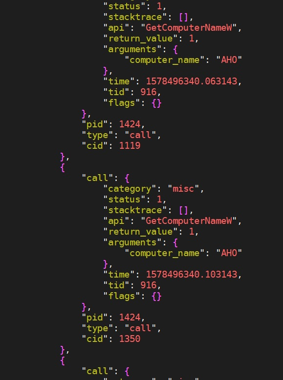

Publication: Tagging Malware Intentions by Using Attention-Based Sequence-to-Sequence Neural Network. Yi-Ting Huang, Yu-Yuan Chen, Chih-Chun Yang, Yeali Sun, Shun-Wen Hsiao, Meng Chang Chen. In Proceedings of Australasian Conference on Information Security and Privacy, 660-668. July, 2019. Christchurch, New Zealand. Paper Link
Technical Report: Huang, Yi-Ting, Ting-Yi Chen, Yeali S. Sun, and Meng Chang Chen. "Learning Malware Representation based on Execution Sequences." arXiv preprint arXiv:1912.07250(2019). Paper Link Yao Saint Yen, Zhe Wei Chen, Ying Ren Guo, Meng Chang Chen. "Integration of Static and Dynamic Analysis for Malware Family Classification with Composite Neural Network" arXiv preprint arXiv:1912.11249(2019). Paper Link